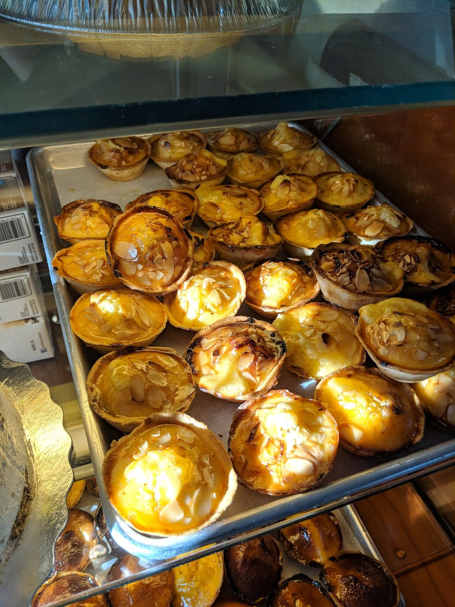

Portuguese bakery & café · Rogers Rd, Toronto · Open daily from 5 a.m.
Warm natas, fresh bread & a proper coffee.
A family-owned Portuguese bakery and café on Rogers Road. Come early for pastéis de nata, ham and cheese croissants, fresh bread and breakfast, or stop in any time for an espresso.
- Pastéis de nata
- Ham & cheese croissants
- Fresh bread daily
- Breakfast & coffee
From the counter
Pastéis de nata & pastries
Custard tarts are what reviewers rave about most (“their pastel de nadas are soo good”), alongside a full case of sweet pastries and desserts.
Breakfast & sandwiches
The ham and cheese croissant is a favourite (“simply delightful”), and reviewers stop in for omelettes, grilled sandwiches and a quick breakfast that “came out surprisingly fast.”
Coffee & fresh bread
Espresso, coffee and iced coffee (“exceptionally fresh”), plus Portuguese bread, rolls and rustic loaves baked fresh, as seen in the bakery’s Google photos.
This list comes from the bakery’s Google listing, its photos, its reviews and its own Facebook intro (“Portuguese bakery & cafe, family owned and always fresh bread and cakes”). No prices are listed because the bakery doesn’t publish a menu online. Call to ask what’s fresh today.
Our bakery
A Portuguese café for the neighbourhood
Family owned
Dynasty is a family-owned Portuguese bakery and café, open every day from 5 a.m. for the early crowd. Regulars come for the natas, the bread and the friendly faces behind the counter, and some say they come back every week.
“I highly recommend this establishment for anyone seeking to indulge in exquisite Portuguese cuisine.”
Bret Mossing, Google review. “Family owned” is from the bakery’s own Facebook page.
Bring cash: reviewers say the bakery is cash only (a Google review by Bret Mossing, and Google’s review summary). Call ahead to check.
What customers say
4.6 ★ from 298 Google reviews (checked Nov 11, 2026). Quotes are word for word. Each one says where it was read: on the Google listing itself, or on a public page that copies reviews. Google shows only a handful of reviews without signing in, so a few quotes are excerpts Google highlights, or come from the Restaurantji directory, which doesn’t show reviewer names.
★★★★★
The service here is incredible! Jason was kind enough to give me a couple of free goodies (their pastel de nadas are soo good) because it was my first time there! Erika was incredibly sweet & attentive, a great conversationalist as well. She made me a delicious iced coffee. I’m only in the city for a few more weeks but I will definitely be stopping by again :)
★★★★★
I stopped by this bakery for breakfast while I was in the neighborhood and I’m so glad I did. The omelette was cooked perfectly, the iced coffee was delicious, and everything came out surprisingly fast. The service was warm and attentive from start to finish — you can really feel the care they put into their customers. A great spot to start your morning. I’ll definitely be coming back!
★★★★★
I highly recommend this establishment for anyone seeking to indulge in exquisite Portuguese cuisine. The cheese and ham croissant is simply delightful, and the coffee is exceptionally fresh.
I make it a point to visit at least once a week.The waitress, Susy, stands out with her impeccable service—she is attentive, polite, and extremely friendly.
Please note, they only accept cash. This place tops my list!
★★★★★
Amazing service, amazing people, and fantastic, delicious food, bread, pastries, and desserts.
★★★★★
It is very great place to have coffee ☕️
Star rating not shown in source
It's a lovely small bakery, as delicious bread, pastries and coffee.
Star rating not shown in source
The service was amazing as well-staff are very friendly.
★★★★★
The best selection in pastries and bread. I especially recommend trying the Natas with the custard topping! Amazing!
★★★★★
A great selection of pastries and dessert , that are just simply amzing
Fresh from the bakery
Real photos from Dynasty Bakery & Cafe Ltd’s public Google listing and its customers’ reviews. Tap to enlarge.
Visit the bakery
440 Rogers Rd A
Toronto (York), ON M6M 1A5
| Monday | 5 a.m.–8 p.m. |
|---|---|
| Tuesday | 5 a.m.–8 p.m. |
| Wednesday | 5 a.m.–8 p.m. |
| Thursday | 5 a.m.–8 p.m. |
| Friday | 5 a.m.–8 p.m. |
| Saturday | 5 a.m.–8 p.m. |
| Sunday | 5 a.m.–8 p.m. |
These are the hours on Google today, and Waze shows the same. An older copy of the bakery’s Facebook details lists closing at 9 p.m., so call if you’re coming late. Reviewers say it’s cash only. Follow along on Facebook.